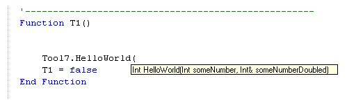
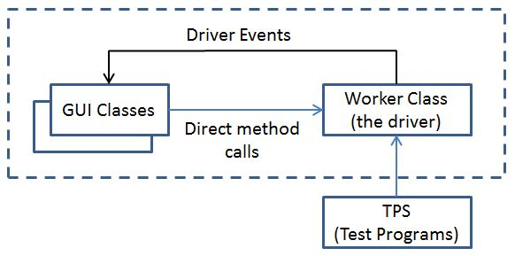

There is nothing special about drivers and add-in modules used in the ActivATE Test Platform. ActivATE will easily use any .NET class library or COM object. The class library can be simple or complex. We recommend using the ActivATE SDK to create drivers but this is not required at all. For example: The following C# code is a simple example of a class library that will compile to a DLL.
using System;
using System.Collections.Generic;
using System.Text;
[Serializable]
namespace Racal.Tools
{
public class MyTool
{
public int HelloWorld(int someNumber, ref int someNumberDoubled)
{
// API's should always return an error code indicating
// whether or not the API was successful.
int errCode = 0;
// Do some work
someNumberDoubled = someNumber * 2;
return errCode;
}
}
}
Note: ComVisible(true) should be added to the assembly to make your class visible to VBScript.
If we add the object as "Tool7" in the ActivATE Configuration Tab, then the test program would see the "HelloWorld" API.

Recall that ActivATE has both a back-end runtime process and a front-end GUI process. Creating a class library such as the example above will run just fine in the back-end runtime process - and this may be all wee need. However, if we want a GUI to interact with the MyTool class, then we should add another class to peform this task. Drivers may also employ enum types, threading, events, and a host of other techniques. A brief architectural overview of an add-in or driver follows:
Instrument
drivers should be broken down into at least two classes: a worker class and a
GUI (Graphical
User Interface) class.
The worker class will do the hardware
interfacing to the instrument.
It contains the setup functions, the instrument
control, intialization, constants, enum types, and pretty much everything else
that is required to interface with the hardware.
The worker class never interfaces with the GUI
components directly and infact, shouldn’t
even know the GUI class exists.
Rather, the worker class should fire off events
to update the user interface (more on events in
Part 3).

The GUI class will never create or instantiate the worker class. The GUI is handed the worker class object by the host application - in this case, ActivATE. It is up to the host application to create the driver and then create as many GUI classes as desired, usually on demand from the user. As new GUI classes are created, the host application simply hands over the worker class object to the GUI.
The GUI class should play three main roles and only three roles: 1) it will display information about the instrument, 2) it receives input from the user via mouse-clicks and keyboard entry, and 3) it sinks events from the worker class. The GUI class should never do any real work such as managing and processing data files or dealing with hardware directly. We want to be able to swap GUI classes in and out with very little impact to the underlying operation of the driver. Keeping to this architecture allows us to compa
rtmentalize instrument driver roles and to keep software maintenance costs
down. Using
this model, we can in fact, use GUI classes from different DLLs.
With .NET remoting,
the GUI class can even be in a different
process space and/or machine than the back-end worker class.
In a web-centric world, this is a great
advantage.
see also: Creating .NET Drivers - Part 2 | Creating .NET Drivers - Part 3 | Using the SDK | Constants
Astronics Test Systems
Last updated on August 12, 2015 by D. Ignacio